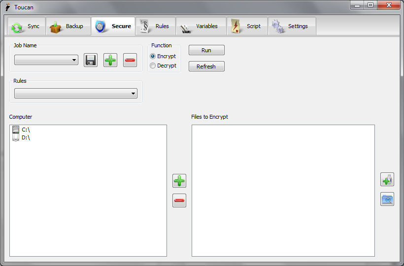

Secure¶
Overview¶
Secure uses 256-bit AES encryption to stop other people looking at your files. Unlike programs such as Truecrypt and FreeOTFE which work by installing a driver on the system and thus require a driver Toucan encrypts on the file level. The main difference is that you need to encrypt files after you create them with Toucan whereas using Truecrypt files are automatically encrypted when you save them.
User Interface¶
The layout of the Secure tab is very similar to that of the Backup tab. Along the top are the controls for the backup, the standard jobs area, the standard rules area and the choice for encryption or decryption. On the left hand side below these settings if the computer browser. Here you can select which files to encrypt/decrypt. On the right hand side is the file list. Once you have added files from the computer browser they appear here so you can easily see what will be backed up. Using the buttons on the right hand side you can also add Variables and expand all of thefolders you have selected. The file list is automatically coloured using any Rules you might have selected.

Function¶
- Encrypt
- This options encrypts the files in the file list using 256-bit encryption, once encrypted files will have the .cpt extension appended to them.
- Decrypt
- This option decrypted the selected files and folders. Please note only files with the .cpt extension will be processed.
Preview¶
Whenever you add new items to a secure job they will automatically be previewed and so either be left black, so show they will be included in the job, or red to show that they have been excluded.